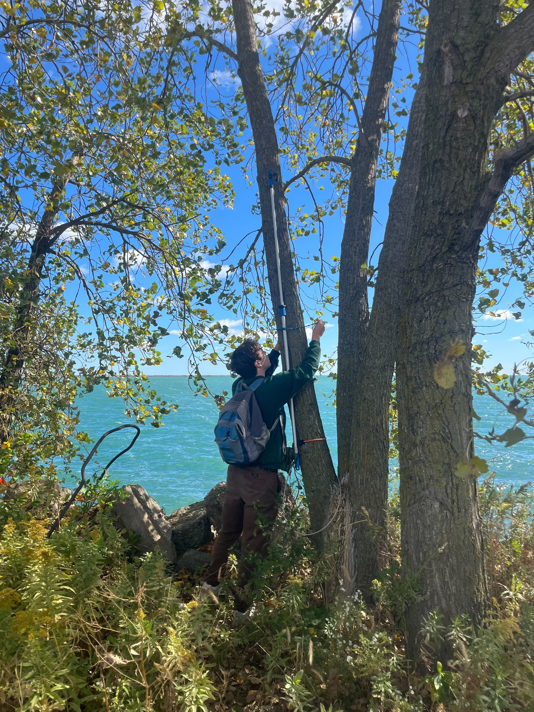

About Me
Hello! Thanks for stopping by! I am an urban ecologist based in Chicago focused on using ARUs (autonomous recording units) to survey wildlife. While most of my work surrounds acoustic monitoring of birds and bats, I am profoundly interested in all acoustic ecology projects. Check out the highlighted work tab to see what I'm up to and feel free to get in contact to collaborate!
Beyond just my science, I am an educator and naturalist with lots of experience in scientific outreach. Beyond this, I am an avid birder, gardener, and hiker. Check out the blog and wildlife tabs to learn more about what I get up to outside of science and education!
